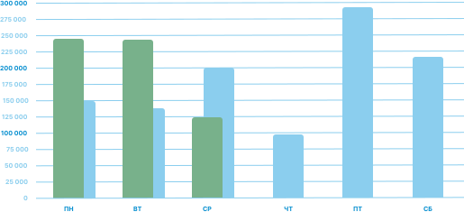

Мониторинг деятельности по дням недели
Сравнение доходов по внебюджету

Текущая неделя
 Прошлая неделя
Прошлая неделя
Графический анализ работы за год по месяцам
Информационная система работы патологоанатомического бюро (ИСР ПатБюро)
Представляет собой три программных модуля:
- информационная система патологоанатомического бюро, - система оценки качества, - система мониторинга деятельности учреждений.
В программу включены формы протоколов, журналов и отчетов, необходимых для работы патологоанатомических отделений,
созданных на основании соответствующих Приказов Министерства Здравоохранения РФ в актуальной редакции.
Ключевой функционал:
• Объединение разрозненных филиалов учреждения в единой информационной среде, • Хранение текстовой информации, фото и видеоматериалов, • Автоматическое ведение сквозной нумерации протоколов по всем филиалам учреждения, • Ведение стандартных протоколов аутопсии, биопсии, • Многоуровневый внутренний контроль качества ведения протоколов, • Автоматическое формирование отчетной документации, • Автоматическое формирование счетов в ТФОМС.
Представляет собой три программных модуля:
- информационная система патологоанатомического бюро, - система оценки качества, - система мониторинга деятельности учреждений.
В программу включены формы протоколов, журналов и отчетов, необходимых для работы патологоанатомических отделений,
созданных на основании соответствующих Приказов Министерства Здравоохранения РФ в актуальной редакции.
Ключевой функционал:
• Объединение разрозненных филиалов учреждения в единой информационной среде, • Хранение текстовой информации, фото и видеоматериалов, • Автоматическое ведение сквозной нумерации протоколов по всем филиалам учреждения, • Ведение стандартных протоколов аутопсии, биопсии, • Многоуровневый внутренний контроль качества ведения протоколов, • Автоматическое формирование отчетной документации, • Автоматическое формирование счетов в ТФОМС.